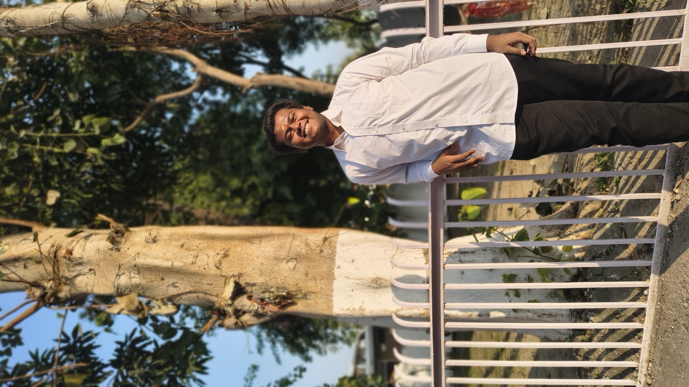

Genetics & Genomics
Exploring genes, inheritance, genetic variation, genome organisation and their biological significance.
Student Portfolio · Genetics & AI
An undergraduate student exploring the intersection of Genetics, Artificial Intelligence and Biological Sciences. Interested in understanding how computational approaches can contribute to biological research.

01 / Introduction
Hello! I am Harsh Priyanshu, currently pursuing a Bachelor of Technology in Genetics and Artificial Intelligence at Lovely Professional University, Punjab.
My academic interests lie in understanding genetics, biological systems and the growing role of artificial intelligence in scientific research.
I am currently building my foundation in programming and biological sciences while exploring the possibilities of combining computational methods with laboratory-based research.
This portfolio documents my academic journey, interests, learning experiences and the direction in which I hope to develop.
02 / Academic Background
My academic foundation and current area of study.
Undergraduate Programme
Specialisation: Genetics and Artificial Intelligence
Institution: Lovely Professional University
Location: Punjab, India
Status: Currently pursuing
03 / Areas of Exploration
Fields I am interested in learning about and exploring throughout my academic journey.
Exploring genes, inheritance, genetic variation, genome organisation and their biological significance.
Understanding how computational intelligence and machine learning can contribute to scientific problems.
Developing an understanding of biological processes, experimental approaches and laboratory research.
Building programming foundations and exploring computational approaches to problem-solving.
Exploring the applications of biological systems and biotechnology in scientific and environmental contexts.
Interested in how computational tools can help analyse and interpret biological information.
04 / Academic Work
An overview of my developing research interests and academic activities.
A poster topic exploring bacterial biodegradation pathways and their potential role in addressing plastic pollution and supporting aquatic ecosystem restoration.
05 / Academic Exposure
Academic events and learning opportunities that form part of my university journey.
Poster topic: Beyond Plastic Removal: Bacterial Biodegradation Pathways and Their Potential for Aquatic Ecosystem Restoration.
Participation in the pre-conference workshop as part of academic exposure to nanotechnology and nanomaterials.
06 / Looking Ahead
My long-term academic goal is to explore the intersection of genetics, artificial intelligence and computational biological research. I hope to develop the knowledge and practical understanding needed to contribute to this interdisciplinary field.
07 / Connect
This portfolio represents my ongoing academic journey. As I continue learning and gaining experience, I hope to keep updating it with new projects, skills and research activities.
Visit My GitHub Profile ↗